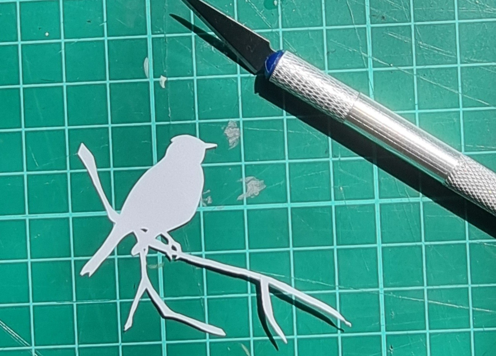
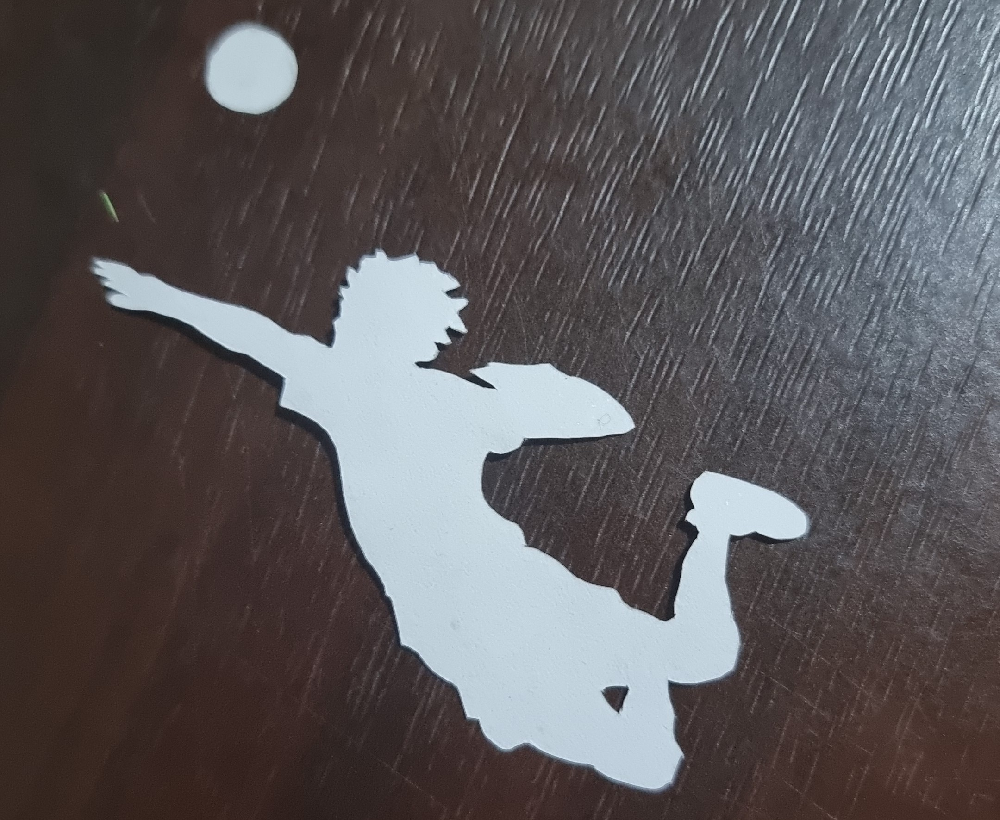
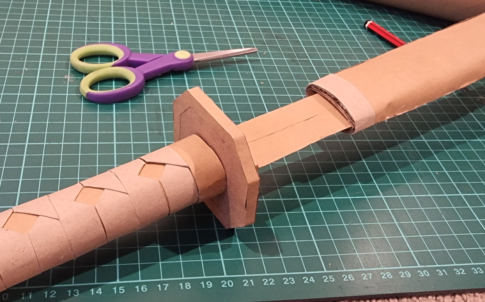
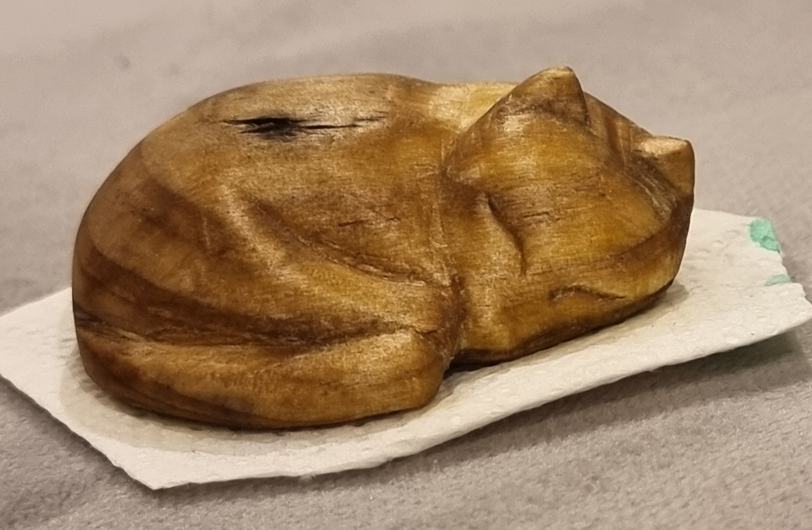
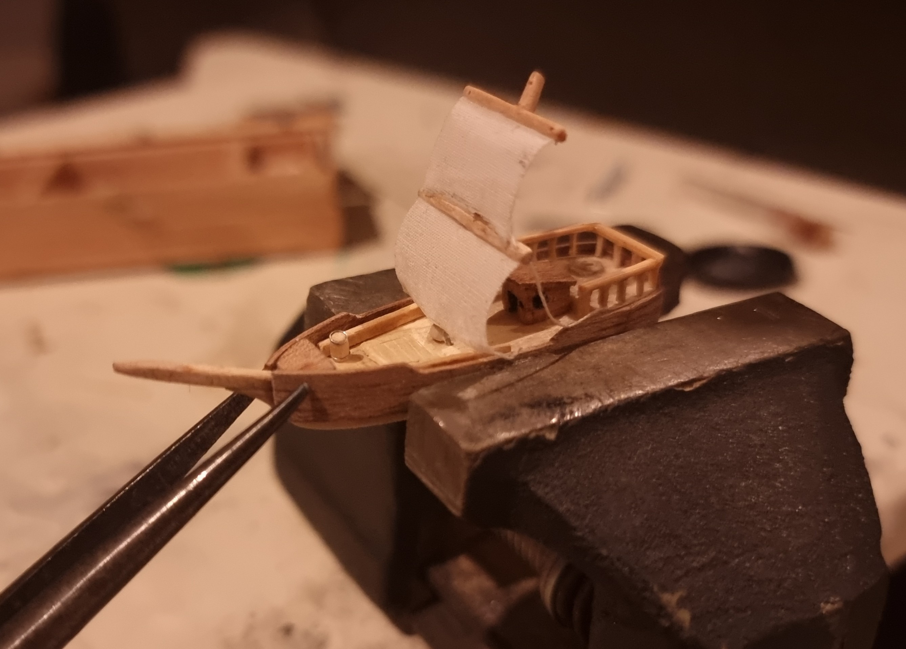

> Crafts
Things I spent way too long making-
A bunch of projects I've undertaken, crafts I've made, and things I've done to pass time, like the castle structure on the right.
Note: For overlapping images on this page, hover your mouse over each picture to bring it to the front.
_
And I still lost the scrabble game

> paper
I use these as decorations, because I can't draw to save my life. All of these are traced onto paper, before being very carefully cut out with a scalpel,
so that the whole process probably takes as long as just drawing it by hand.
I also can't erase anything I cut out, so I had to redo the bird a couple of times, especially since it tore in half...
Again, hover the cursor over each image to bring it to the front.


> cardboard
Cardboard is a bit thicker and stronger than paper [Citation needed] and so I can make larger projects with it.
The sword there took about a week, and was made with about four different kinds of card, for size, colour, and strength.
One of my nicer projects

> wooden carvings
These take a long time, but are pretty satisfying to make. All you need is a pencil, a block of wood, and a sharp knife.
Unfortunately since I used old wood, the cat got a crack in its back. Use new wood.
And also, you should be better at drawing than I am, so that the end project actually looks like what it's meant to be...


> current project
Eventually, this will be a ship in a bottle. It's still missing all the other sails, and the hull needs to be painted, but otherwise it's almost complete.
If you're wondering how they're made, the masts all have tiny hinges at their bases, which allow them to fold down when the ship is being placed in the bottle.
Then, the rigging is used to pull the masts back into position.
